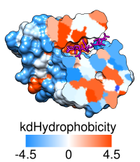

|
|
2D Labels allows creation and placement of arbitrary text labels, including symbols, in two dimensions (2D). The labels appear in front of any graphics displays and will not move when models are moved. Such labels are mainly useful in images and movies. 2D Labels information is saved in sessions. 2D labels can also be saved to (and read from) a separate label file. See also: Color Key
There are several ways to start 2D Labels, a tool in the Utilities category. 2D Labels is also implemented as the command 2dlabels.
Use mouse for label placement is automatically turned on when 2D Labels is started. This option reassigns the left mouse button (button 1) to labeling: clicking starts a new 2D label and previously created 2D labels can be repositioned by dragging. Unchecking the option or closing the 2D Labels dialog returns the left mouse button to its previous function (by default, rotation of models).
The top section of the 2D Labels dialog lists the existing 2D labels and their (lower left-hand corner) x,y coordinates. The x axis is horizontal and the y axis is vertical, and both range from 0 to 1 in the visible portion of the window. It is possible to place a label partially or completely outside the visible area, however. The 2D label most recently created, moved, or clicked on within the 2D Labels dialog is the active label.
Typing into the Text area defines the content of the active label. A label can include letters, numbers, and various symbols present on the keyboard, as well as spaces and carriage returns. Several additional symbols such as arrows and Greek letters can also be included, as described below.
The Insert symbol menu provides easy access to several commonly used symbols. Choosing a symbol from the menu inserts it into the active label. Choosing more... from the bottom of the menu shows many more symbols in a browser window, from which a symbol can be copied and then pasted into the Text area of the 2D Labels dialog. Symbols from other sources can also be incorporated using standard copy-and-paste operations.
As text is entered, it will appear in the graphics window according to the current settings:
The Shown checkboxes allow hiding/showing individual labels.
Delete deletes the active label. Close dismisses the 2D Labels dialog, and Help opens this manual page in a browser window.
2D labels can be written to or read from a file using the File menu in the 2D Labels dialog. A simple text format is used, where:

|
Surface rendered by kdHydrophobicity: |
|---|
|  |
Color Key allows creation and placement of a color key bar and associated labels in two dimensions. The labels can include symbols. Color Key information is saved in sessions. See also: 2D Labels, Scale Bar
There are several ways to start Color Key, a tool in the Utilities category. In addition, there are buttons in Render by Attribute, Surface Color, and Coulombic Surface Coloring to start this tool and populate it to match the current coloring scheme.
Use mouse for key placement (near the bottom of the dialog) is automatically turned on when Color Key is started. This option reassigns the left mouse button (button 1) to color key creation and placement: clicking and dragging sets the location of opposing corners of the color key rectangle, or color bar. A key can be vertical or horizontal. A previously created color key can be moved by grabbing near its center and dragging, but clicking anywhere else will delete the color key and start over. Only one color key can exist at a time. Unchecking the mouse option or closing the Color Key dialog returns the left mouse button to its previous function (by default, rotation of models).
Any desired changes to the Number of colors/labels should be applied first, as changing the number will erase prior color/label specifications. A color can be changed by clicking the corresponding color well and using the Color Editor. Label text can be entered directly or pasted (including symbols) into the corresponding fields.
The color/label pairs from top to bottom in the dialog will be arranged from top to bottom in a vertical key and from left to right in a horizontal key. Reverse ordering of above repopulates the color/label values in the reverse of the current order.
Additional options:
Delete deletes the color key display without changing the color/label settings in the dialog. Close dismisses the Color Key dialog, while Help opens this manual page in a browser window.